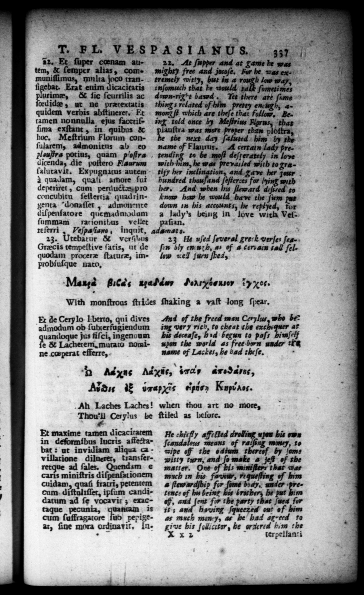

hn. os bar Ev HS SITU RAS ASS ST 5 QAKIKNET 1 — T. PL. VESPASIANUS. CT. 12. Et ſuper coenam autem, & ſemper alias, communiſſimus, multa joco tranſigebat. Erat enim dicacicatis urime, & lic ſcurrilis ac ord idee, ut ne prætextatis quidem verbis abſtineret. Et tamen nonnulla ejus facetiſſima exſtant, in quibus & hoc. Meſtrium Florum conſularem, admonitns ab eo plauſtra pot ius, 2 Ty ora dicenda, die poſtero Faurum ſaluravit. Expugnatus autem à quadam, quaſi amore ſui deperiret , cum peruuctæ pro concubitu ſeſtertia quadringenta "donafler , admonente diſpenfarore quemadmodum ſummam racrionitus vellet referri , Veſpaſiam, inquit, adamato. 23. Utebatur & verſus Grecis tempeſtive ſatis, ut de quodam proceræ ſtaturæ, improbiuſque nato, Maga gc, xpab dey June fy x0. 22. At ſupper and at game be was tremely Titty, but in a A :njomuch that he would talk ſometimes dommrigit bawd', Tet there att ſume things related of lum pretty enciegh, amonzſt which are theſe that Follow, Being told once by Meſtrius Flprus, that 22 lauſtra was more proper than p oſtra, the next day ſaluted him by the name of Flaurus, A certatn lady pretending to be moſt deſterately in love with him, he was prevailed with to gratity her inclination, and gave her tour . 1 hundred thouſand ſefterces for lying with her. And when Ins fleward 4757 to know how he would have the ſum pur down in his accounts, he replyed, for a lady's being in love with Vel paſian, ' 23 He uſed ſeveral greck verſes ſeaſen bly eni1h, as of à cervain al fel. low wel] Jurn ſhea, | With monſtrous ſtrides ſhaking a vaſt long ſpear. Ec de Cery lo liberto, qui dives admodum ob ſutxerfagiendum uandoque jus fiſci, ingenuum e & Lacherem, mutato nomiAn1 of the freed men Cerylu, who be* ing very rich, to cheat the exchequer af his deceaſe, hid begun to paſs himſelf upon the world as free ben under tł name of Lackes, he bad theſe. n h Adxnc Adis, indy anoSanc, Nn i vnapyis pier RN. . Ah Laches Laches! [mr Cerylus be Et maxime tamen dicaciratem in deſormibus Iucris affectabat: ut invidiam aliqua ca villatione dilnerer, tian: ferad ſales. Quendam e carts miniftris diſpenſationem cuidam, quaſi fratri, petentem cum diftalifſer, ipſum candidatum ad ſe vocavir ; eutaque pecunia, quantam is cum ſuffragatore ſub pepigeat, ſine mora ordina tit. Inwhen thou art no more, ſtiled as before. | He chit 7 Sſcanda means of - wipe off the od witty turn, and ſo make matter. One of bi much in his favor, requeſting of um - ſtewaraſbi fer ome body. un ler — tenc: of hu being bi — fs mn of, and ſent fo the party that ſued for it; and beying Squeezed ou: of him as much mm, as a4 agreed to give bis ſollicutar, be rare him the X x > ter pellan: i F .
